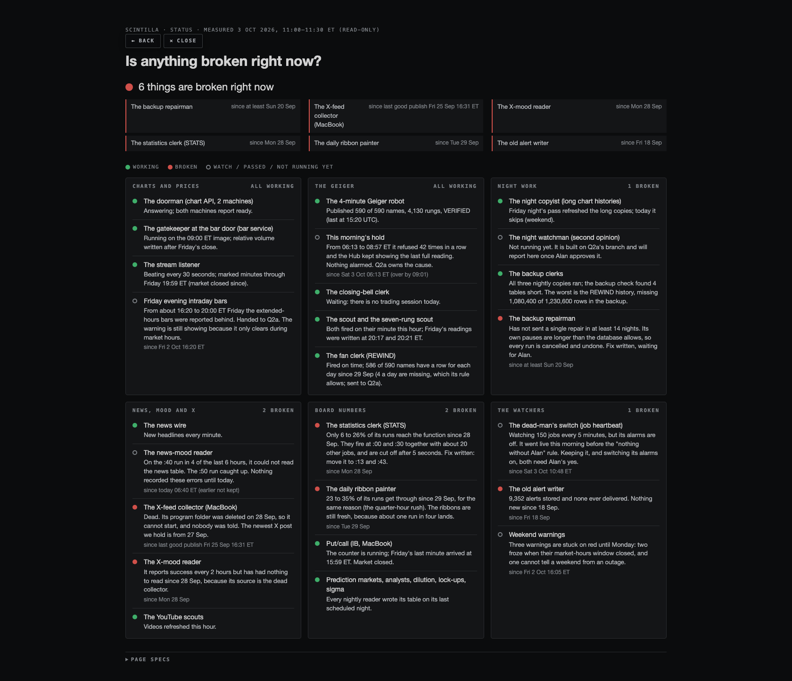

Scintilla has 150 things that are supposed to run by themselves: 137 timers inside the database (109 switched on), 10 machines on Fly, and 3 jobs on the MacBook. I looked at what each one actually did, not what it reported. 8 are failing or silently doing nothing right now, and until today nothing would have told you about any of them. Nothing was changed on the live system by this lane. Every fix is written down, tested on a throw-away copy of the database, and waiting for your yes.
The first Q2b run (10:27 ET) was started under the earlier brief. At 10:48 ET it put the dead-man's switch live: three new tables and a checker that runs every 5 minutes. A dead-man's switch is a watcher that raises the alarm when a job goes quiet. This happened before your 11:00 rule ("no changes on my Hub without my approval"). Its alarms are off: it has sent no message (last_push_at is empty) and writes only its own tables. I did not touch it.
Two choices for you: keep it as it is (recommended; it is what this page's verdicts came from), or remove it with one file: supabase/migrations/20261003_job_heartbeat_ROLLBACK.sql.
While testing it I found a flaw. If its alarms were switched on as it stands, the first red job would make every check fail. Fix A below corrects that.
The characters, so the rest reads easily: the 4-minute Geiger robot publishes the Geiger. The gatekeeper at the bar door fetches prices. The night copyist rewrites long chart histories. The night watchman is Q2a's nightly second opinion. The backup clerks copy the database to R2 each night. The switchboard recorder writes down what every web call really answered.
mirror-gap-repair-daily). It failed on all 14 nights the database still remembers. Its own pauses (160 s) are longer than the database allows (120 s), so every run is cancelled. The cancel also undoes the four repair calls it had lined up, so not one was ever sent. Fix C.deliverables/20261003/status/index.html answers one question: is anything broken right now, and since when. It shows green or red per part in plain words.

Headless capture, 1680 px wide (390 px phone capture: shots/status-390.png, one column, no sideways scroll). What it shows: the headline "6 things are broken right now", six red items with their dates, and six panels: charts, Geiger, night work, news and X, board numbers, watchers.
for / keep_firing_for → jobs that fire more than hourly need 3 failures in a row before FAILING; window watchers must resolve when their window closes.--skip-start update (29 Sep–1 Oct) and nobody was told.provider/q2b-keepalives-20261003 @ fb7676b. The four hourly jobs ping at every exit. The ping never throws and never changes an exit code. Tests 845/845. Ships only with a new batch image after your yes; rollback = the previous image.supabase/migrations/20261003_q2b_STAGED_A_heartbeat_alarms_on.sql (rollback …_ROLLBACK.sql).…_STAGED_B_stagger_busy_minutes.sql (+ rollback).…_STAGED_C_mirror_gap_repair_split.sql (+ rollback). Note: this starts four backup calls a night that have not run for at least 2 weeks.…_STAGED_D_record_real_http_answers.sql (+ rollback).…_STAGED_E_youtube_transcripts_grant.sql (+ rollback).sqltest/run.mjs applies the live migration, proves the alarm-key bug, then applies each staged file and its rollback: 11/11.verdict-intake.json. The night watchman pings once a night. This heartbeat alarms if it did not run; Q1's integrity check alarms on what it says. One fault never rings twice.Full data with references per job: jobs.json. Times are UTC unless marked. "Last success" comes from the database's run history, the recorded answers, or the job's own last log line.
| Job | What it does | When (UTC) | Last success (measured) | Now | Verdict · fix | Found |
|---|---|---|---|---|---|---|
| mac:com.alanharvey.scintilla-xfeed-collector the X-feed collector | Nine times a day reads Alan's X timeline in a hidden browser and publishes the feed. | 06:30 08:30 10:30 12:30 14:30 16:30 18:30 21:00 23:30 local | last good publish 25 Sep 20:31Z; newest captured post 27 Sep 16:29Z | DEAD 6 DAYS | CHANGE | Re-point the launchd job at a kept copy of xfeed-program.mjs (or retire it) — Alan's call; until then sentiment-x has nothing to read. |
| mirror-gap-repair-daily the backup repairman | Nightly 05:30 UTC should re-send ribbon_signals and ohlcv_history to the R2 backup. | 30 5 * * * | — | FAILING | CHANGE · STAGED C | Its real HTTP answer is not recorded: pg_cron says "succeeded" when the request is only queued; the answer is deleted after 6 h. pg_cron failed 3 of 3 runs in 72 h: ERROR: canceling statement due to statement timeout Failed on all 14 nights pg_cron remembers (20 Sep - 3 Oct): pg_sleep(160) > the 120 s statement limit; the rollback discards its queued requests, so nothing is ever sent. |
| ribbon-d-3m the daily ribbon painter | Every 15 min recomputes the daily ribbon (trend bands) for every stock. | */15 * * * * | 2026-10-03 14:45:00.895379+00 | FAILING | CHANGE · STAGED B | Carries the public anon key inside the command; Supabase recommends Vault (low risk: the same key ships in the Hub page). Real answers 24 h: 22 of 96 OK (22.9%), 74 never connected (5 s / 120 s wait ran out at the busy quarter-hour). |
| stats-engine-30m the statistics clerk | Every 30 min recomputes z-scores and percentiles per stock. | */30 * * * * | 2026-10-03 14:30:01.164175+00 | FAILING | CHANGE · STAGED B | Real answers 24 h: 7 of 48 OK (14.6%), 41 never connected (5 s / 120 s wait ran out at the busy quarter-hour). |
| sentiment-x-2h the X-mood reader | Every 2 h scores new X posts from the X-feed collector. | 40 */2 * * * | 2026-10-03 14:40:00.744109+00 | SILENT | CHANGE · STAGED D | Its real HTTP answer is not recorded: pg_cron says "succeeded" when the request is only queued; the answer is deleted after 6 h. Carries the public anon key inside the command; Supabase recommends Vault (low risk: the same key ships in the Hub page). Answers 200 every 2 h but has had nothing to score since 28 Sep 20:40Z: its source, the MacBook X-feed collector, is dead (see mac:xfeed). |
| audit-engine-15m the old auditor | Every 15 min runs the audit-engine checks. | */15 * * * * | 2026-10-03 14:45:00.775897+00 | FLAKY | CHANGE · STAGED B | Carries the public anon key inside the command; Supabase recommends Vault (low risk: the same key ships in the Hub page). Real answers 24 h: 77 of 96 OK (80.2%), 19 never connected (5 s / 120 s wait ran out at the busy quarter-hour). One of seven overlapping watchers; fold into the heartbeat + feed_alarm route once its reader is known (Alan's call). |
| health-monitor-5m the old health monitor | Every 5 min checks feed ages and writes feed_health. | */5 * * * * | 2026-10-03 14:55:00.530192+00 | FLAKY | CHANGE · STAGED B | Real answers 24 h: 261 of 288 OK (90.6%), 26 never connected (5 s / 120 s wait ran out at the busy quarter-hour). One of seven overlapping watchers; fold into the heartbeat + feed_alarm route once its reader is known (Alan's call). |
| sentiment-news-10m the news-mood reader | Every 10 min scores new headlines for mood per stock. | */10 * * * * | 2026-10-03 14:50:00.643233+00 | FLAKY | CHANGE · STAGED D + B (vacuum moved) | Its real HTTP answer is not recorded: pg_cron says "succeeded" when the request is only queued; the answer is deleted after 6 h. Carries the public anon key inside the command; Supabase recommends Vault (low risk: the same key ships in the Hub page). Answered 500 "read news" on its :40 run in 4 of the last 6 hours (10:40 12:40 13:40 14:40Z); unrecorded until now. :40 is when the hourly vacuum runs. |
| fly:nightly-verdict the night watchman | Each night checks every close and Geiger cell against Massive and FMP; one verdict file with named causes. | nightly (to be scheduled) | — | NOT YET RUNNING | KEEP · STAGED A | Format agreed through deliverables/20261003/q2a-rules/verdict-format.json; reply in q2b-jobs/verdict-intake.json. |
| analyst-estimates-daily the estimates keeper | Nightly saves the day's EPS/revenue estimates so history exists. | 40 1 * * 2-6 | — | NOT YET RUN | CHANGE · STAGED D | Its real HTTP answer is not recorded: pg_cron says "succeeded" when the request is only queued; the answer is deleted after 6 h. Carries the public anon key inside the command; Supabase recommends Vault (low risk: the same key ships in the Hub page). Created 2 Oct after its slot; its first scheduled run is still ahead. |
| analyst-revisions-morning the analyst-notes reader (morning) | Weekday mornings reads overnight notes. | 0 13 * * 1-5 | — | NOT YET RUN | CHANGE · STAGED D | Its real HTTP answer is not recorded: pg_cron says "succeeded" when the request is only queued; the answer is deleted after 6 h. Carries the public anon key inside the command; Supabase recommends Vault (low risk: the same key ships in the Hub page). Created 2 Oct after its slot; its first scheduled run is still ahead. |
| offering-watch-morning the dilution watch (morning) | Weekday mornings reads overnight filings. | 15 11 * * 1-5 | — | NOT YET RUN | CHANGE · STAGED D | Its real HTTP answer is not recorded: pg_cron says "succeeded" when the request is only queued; the answer is deleted after 6 h. Carries the public anon key inside the command; Supabase recommends Vault (low risk: the same key ships in the Hub page). Created 2 Oct after its slot; its first scheduled run is still ahead. |
| fly:chart-api (2 machines) the doorman | Always on; serves bars, Geiger, previous close to the Hub and Station. | continuous, /live 15 s + /traffic-ready 30 s checks | /health ready=true on both 3 Oct ~15:00Z | ON TIME | KEEP | — |
| fly:scout-geiger-nightly the scout | Hourly (~:21); after 20:15 ET computes the off-Hub Geiger for ~5,600 names once per session. | fly hourly | 2026-10-03T14:21:01Z NOTHING_MISSING (newest session 2026-10-02, written 00:21Z) | ON TIME | CHANGE · provider fb7676b | 1 Oct it was a day stale after a --skip-start update; nobody was told. |
| fly:provider-fan-daily-hourly-i5 the fan clerk | Hourly (~:50); after 16:30 ET writes each stock's daily fan row (Hub REWIND). | fly hourly | 2026-10-03T14:50:09Z NOTHING_TO_DO | ON TIME | CHANGE · provider fb7676b | Accepts 586 of 590 names per session as complete (its threshold is 531): 4 names a day have no fan row since 29 Sep (rule -> Q2a). |
| fly:scout-geiger-seven-hourly the seven-rung scout | Hourly (~:17); works in the 16 and 20 ET hours: the seven-rung off-Hub Geiger. | fly hourly | 2026-10-03T14:17:01Z NOT_A_SESSION_DAY (last write 00:17Z) | ON TIME | CHANGE · provider fb7676b | A degraded run is deliberately not written but exits 0 — invisible. The ping now names it SKIPPED_DEGRADED. |
| fly:provider-tail-scheduled-hourly-i5 the night copyist | Hourly (fuzzy, ~:43); after 20:15 ET on session days rewrites the long (>400-bar) histories for 17 frames. | fly hourly | 2026-10-03T14:43:01Z SKIP_WEEKEND (fired on its minute; Friday night pass proven by the 1st Q2b run: full copies refreshed 00:43Z) | ON TIME | CHANGE · provider fb7676b | Fires on time today. Its only failure trace is a log Fly keeps for ~100 lines; 29 Sep a --skip-start update silenced it for 70 min and nobody was told. |
| fly:geiger-publisher the 4-minute Geiger robot | Always on; every ~4 min reads 590 names x 7 rungs from the chart API and publishes the Geiger the Hub shows. | continuous, restart always | chart API /geiger computed 2026-10-03T14:56:34Z, VERIFIED, 590/590, 4,130 rungs | ON TIME | CHANGE | Held for 2 h 44 min this morning with no alarm. Its log was not read by this lane (a prior permission denial is respected); judged from its published output only. |
| fly:provider-bar-service the gatekeeper at the bar door | Always on; fetches and stores bars, refreshes intraday frames each minute, and (child process) writes relative volume. | continuous, restart always | restarted 13:00Z (p11 image); board_volume newest 2026-10-03 00:00Z | ON TIME | KEEP | Friday 16:20-20:00 ET intraday frames were reported BEHIND for ~4 h (feed_alarm provider_intraday_frames) — hand to Q2a. |
| fly:market-stream the stream listener | Always on; listens to the live trade stream and marks which minutes need new bars (frame-due producer). | continuous, restart on-failure | service_heartbeat 2026-10-03T15:08:39Z (120 beats in the last hour); watermark through Fri 19:59 ET | ON TIME | CHANGE · STAGED A | — |
| mac:com.scintilla.ibkr-putcall the put/call counter | Runs all the time; counts option volume at IB and sends the put/call minute. | continuous | running (pid up 2 h 15 min at 15:05Z); last put/call minute Fri 19:59Z | ON TIME | KEEP | Fri 2 Oct the in-session watch reported no put/call minute for 56 min at 16:05 ET (alarm still open). |
| mac:ai.scintilla.tradingview-mcp the TradingView bridge | Starts TradingView with a debugging port at login. | at login | last exit 0 | ON TIME | KEEP | — |
| analyst-revisions-nightly the analyst-notes reader | Nightly reads new analyst target/rating notes. | 30 1 * * 2-6 | 2026-10-03 01:30:01.002095+00 | ON TIME | CHANGE · STAGED D | Its real HTTP answer is not recorded: pg_cron says "succeeded" when the request is only queued; the answer is deleted after 6 h. Carries the public anon key inside the command; Supabase recommends Vault (low risk: the same key ships in the Hub page). |
| archive-gap-check-nightly | Calls SQL scin_check_archive_gaps on schedule 25 2 * * * (UTC). | 25 2 * * * | 2026-10-03 02:25:00.469655+00 | ON TIME | KEEP | — |
| backfill-deepdaily | Calls SQL backfill_deepdaily_run on schedule 20 7 * * * (UTC). | 20 7 * * * | 2026-10-03 07:20:00.452417+00 | ON TIME | KEEP | — |
| bf-profile | Calls edge function fmp-backfill?job=profile on schedule 25 6 * * * (UTC). | 25 6 * * * | 2026-10-03 06:25:00.481247+00 | ON TIME | CHANGE · STAGED D | Its real HTTP answer is not recorded: pg_cron says "succeeded" when the request is only queued; the answer is deleted after 6 h. |
| cboe-vol-daily | Calls edge function cboe-vol?days=30 on schedule 25 22 * * 1-5 (UTC). | 25 22 * * 1-5 | 2026-10-02 22:25:00.45621+00 | ON TIME | CHANGE · STAGED D | Its real HTTP answer is not recorded: pg_cron says "succeeded" when the request is only queued; the answer is deleted after 6 h. |
| cohort-div-5m | Calls SQL recompute_cohort_divergence on schedule */5 * * * * (UTC). | */5 * * * * | 2026-10-03 14:55:00.521201+00 | ON TIME | KEEP | — |
| composite-by-tf-capture | Calls SQL scin_snapshot_composite_by_tf on schedule 5 13,17,20,23 * * 1-5 (UTC). | 5 13,17,20,23 * * 1-5 | 2026-10-02 23:05:00.476227+00 | ON TIME | KEEP | — |
| crypto-candles-1m | Calls edge function crypto-candles?g=60,300,900,3600 on schedule * * * * * (UTC). | * * * * * | 2026-10-03 14:55:00.466004+00 | ON TIME | KEEP | Carries the public anon key inside the command; Supabase recommends Vault (low risk: the same key ships in the Hub page). |
| crypto-candles-deep-1h | Calls edge function crypto-candles?g=21600,86400 on schedule 23 * * * * (UTC). | 23 * * * * | 2026-10-03 14:23:00.19833+00 | ON TIME | KEEP | Carries the public anon key inside the command; Supabase recommends Vault (low risk: the same key ships in the Hub page). |
| crypto-coinbase-1m | Calls edge function crypto-coinbase on schedule * * * * * (UTC). | * * * * * | 2026-10-03 14:55:00.472116+00 | ON TIME | KEEP | — |
| desk-geo-5m | Calls edge function tvgeo?k=***&store=1&tf=180&days=4000&range=5000&session=extended on schedule */5 * * * * (UTC). | */5 * * * * | 2026-10-03 14:55:00.523102+00 | ON TIME | KEEP | — |
| desk-patterns-2m | Calls edge function tvextract?k=***&store=1&tf=D on schedule */2 * * * * (UTC). | */2 * * * * | 2026-10-03 14:54:00.308485+00 | ON TIME | KEEP | — |
| desk-tvmint-30m | Calls edge function tvmint?k=*** on schedule */30 * * * * (UTC). | */30 * * * * | 2026-10-03 14:30:01.03282+00 | ON TIME | KEEP | — |
| dispatch-reap-2m the switchboard recorder | Every 2 min copies each recorded HTTP job's real answer (200/500/timeout) into cron_dispatch. | */2 * * * * | 2026-10-03 14:54:00.227244+00 | ON TIME | KEEP | — |
| earnings-date-verify-daily | Calls edge function earnings-date-verify?days=10 on schedule 0 10 * * * (UTC). | 0 10 * * * | 2026-10-03 10:00:01.68575+00 | ON TIME | KEEP | — |
| earnings-report-time-1d | Calls edge function earnings-report-time?days=45 on schedule 23 13 * * 1-5 (UTC). | 23 13 * * 1-5 | 2026-10-02 13:23:00.322483+00 | ON TIME | KEEP | Carries the public anon key inside the command; Supabase recommends Vault (low risk: the same key ships in the Hub page). |
| earnings-sweep-generic | Calls edge function earnings-sweep on schedule */10 10-16,20-23,0-4 * * * (UTC). | */10 10-16,20-23,0-4 * * * | 2026-10-03 14:50:00.630309+00 | ON TIME | KEEP | Carries the public anon key inside the command; Supabase recommends Vault (low risk: the same key ships in the Hub page). |
| econ-calendar-drop-moved | Calls SQL public.econ_calendar_drop_moved on schedule 10 * * * * (UTC). | 10 * * * * | 2026-10-03 14:10:00.607431+00 | ON TIME | KEEP | — |
| eod-weekly-rebuild | Calls SQL rebuild_weekly on schedule 0 22 * * 1-5 (UTC). | 0 22 * * 1-5 | 2026-10-02 22:00:01.41642+00 | ON TIME | KEEP | — |
| event-signals-30m | Calls edge function event-signals on schedule 11,41 * * * * (UTC). | 11,41 * * * * | 2026-10-03 14:41:00.065616+00 | ON TIME | KEEP | — |
| fan-daily-refresh the fan clerk (SQL side) | After the close writes non-equity fan rows (equities come from the Fly fan clerk). | 30 22 * * 1-5 | 2026-10-02 22:30:01.394407+00 | ON TIME | KEEP | — |
| feed-alerts-5m the old alert writer | Every 5 min writes feed_alerts rows — 9,352 stored, 0 ever delivered, nothing new since 18 Sep. | */5 * * * * | 2026-10-03 14:55:00.524518+00 | ON TIME | REPLACE | A watcher nobody hears: replace with the one dead-man's switch (job-heartbeat-check-5m) + feed_alarm/ntfy. |
| feed-watchdog-10m the freshness watchdog | Every 10 min compares each feed table's newest row with its allowed age; writes feed_alarm. | */10 * * * * | 2026-10-03 14:50:00.793209+00 | ON TIME | KEEP | — |
| fmp-analyst-2h | Calls edge function fmp-analyst on schedule 17 */4 * * * (UTC). | 17 */4 * * * | 2026-10-03 12:17:00.284375+00 | ON TIME | KEEP | Carries the public anon key inside the command; Supabase recommends Vault (low risk: the same key ships in the Hub page). |
| fmp-economic-12h | Calls edge function fmp-economic on schedule 47 5,17 * * * (UTC). | 47 5,17 * * * | 2026-10-03 05:47:00.247746+00 | ON TIME | KEEP | — |
| fmp-economic-actuals-1h | Calls edge function fmp-economic?only=recent on schedule 5 * * * * (UTC). | 5 * * * * | 2026-10-03 14:05:00.640461+00 | ON TIME | KEEP | — |
| fmp-events-2h | Calls edge function fmp-events on schedule 37 */6 * * * (UTC). | 37 */6 * * * | 2026-10-03 12:37:00.195982+00 | ON TIME | KEEP | Carries the public anon key inside the command; Supabase recommends Vault (low risk: the same key ships in the Hub page). |
| fmp-fundamentals-1h | Calls edge function fmp-fundamentals on schedule 7 */6 * * * (UTC). | 7 */6 * * * | 2026-10-03 12:07:00.271072+00 | ON TIME | KEEP | Carries the public anon key inside the command; Supabase recommends Vault (low risk: the same key ships in the Hub page). |
| fmp-indicator-daily-tick | Calls edge function fmp-indicator-export on schedule * 20-23,0-13 * * * (UTC). | * 20-23,0-13 * * * | 2026-10-03 13:59:00.308017+00 | ON TIME | KEEP | — |
| fmp-nonequity-bars-10m | Calls SQL fmp_control.nonequity_bars_tick on schedule */10 * * * * (UTC). | */10 * * * * | 2026-10-03 14:50:00.653764+00 | ON TIME | KEEP | — |
| fmp-nonequity-quote-1m | Calls SQL fmp_control.nonequity_quote_tick on schedule * * * * * (UTC). | * * * * * | 2026-10-03 14:55:00.438544+00 | ON TIME | KEEP | — |
| freshness-scan-15m | Calls SQL refresh_ohlcv_freshness on schedule */15 * * * * (UTC). | */15 * * * * | 2026-10-03 14:45:00.662521+00 | ON TIME | KEEP | — |
| geiger-1m the old SQL Geiger | Every minute recomputes the database-side Geiger. | * * * * * | 2026-10-03 14:55:00.542961+00 | ON TIME | KEEP | — |
| geiger-snapshot-nightly | Calls SQL scin_snapshot_composite on schedule 10 1 * * 2-6 (UTC). | 10 1 * * 2-6 | 2026-10-03 01:10:00.659537+00 | ON TIME | KEEP | — |
| guardrail-jobhealth-30m the old job auditor | Every 30 min looks for >= 3 failures of one job inside an hour (blind to nightly jobs); 0 rows in 7 days. | */30 * * * * | 2026-10-03 14:30:00.858475+00 | ON TIME | REPLACE | A watcher nobody hears: replace with the one dead-man's switch (job-heartbeat-check-5m) + feed_alarm/ntfy. |
| heartbeat-daily the ticker pulse clerk | After the close writes each stock's daily pulse. | 10 23 * * 1-5 | 2026-10-02 23:10:00.825257+00 | ON TIME | CHANGE · STAGED D | Its real HTTP answer is not recorded: pg_cron says "succeeded" when the request is only queued; the answer is deleted after 6 h. Carries the public anon key inside the command; Supabase recommends Vault (low risk: the same key ships in the Hub page). |
| history-extend the history extender | Every 2 min overnight extends stored daily history. | */2 4-13 * * * | 2026-10-03 13:58:00.362581+00 | ON TIME | KEEP | — |
| ibkr-gateway-watch-1m the gateway watch | Every minute checks the IB Gateway feed is alive; ntfy on change. | * * * * * | 2026-10-03 14:55:00.563191+00 | ON TIME | KEEP | — |
| job-heartbeat-check-5m the dead-man's switch | Every 5 min judges every job ON TIME / LATE / FAILING from its runs and real answers (alarms off). | */5 * * * * | 2026-10-03 14:55:00.510451+00 | ON TIME | KEEP | Applied live 14:48Z 3 Oct by the first Q2b run BEFORE the brief changed to staged-only; alarms off, no message sent. Its alarm path has a key bug (feed_alarm -> feed_contract) that STAGED A fixes. Needs Alan's approval to stay. |
| macro-econ-cot-daily | Calls edge function macro-feeds?days=120 on schedule 35 22 * * * (UTC). | 35 22 * * * | 2026-10-02 22:35:00.418378+00 | ON TIME | CHANGE · STAGED D | Its real HTTP answer is not recorded: pg_cron says "succeeded" when the request is only queued; the answer is deleted after 6 h. |
| macro-vix-daily | Calls edge function macro-feeds?only=vix&days=30 on schedule 20 22 * * 1-5 (UTC). | 20 22 * * 1-5 | 2026-10-02 22:20:00.904274+00 | ON TIME | CHANGE · STAGED D | Its real HTTP answer is not recorded: pg_cron says "succeeded" when the request is only queued; the answer is deleted after 6 h. |
| market-clock-1m | Calls edge function market-clock on schedule */5 * * * * (UTC). | */5 * * * * | 2026-10-03 14:55:00.490551+00 | ON TIME | KEEP | — |
| mirror-audit-nightly the backup inspector | Nightly compares each backed-up table with the database (rows, columns, a sample). | 40 5 * * * | 2026-10-03 05:40:00.787332+00 | ON TIME | CHANGE · STAGED D | Its real HTTP answer is not recorded: pg_cron says "succeeded" when the request is only queued; the answer is deleted after 6 h. |
| mirror-state-tables-daily the state-table copier | Nightly copies small live-state tables to R2. | 10 5 * * * | 2026-10-03 05:10:00.652664+00 | ON TIME | CHANGE | Its real HTTP answer is not recorded: pg_cron says "succeeded" when the request is only queued; the answer is deleted after 6 h. |
| mirror-tables-r2-1 the backup clerk (1) | Nightly copies database tables to the R2 backup, chunk 1. | 10 2 * * * | 2026-10-03 02:10:00.55422+00 | ON TIME | CHANGE · STAGED D | Its real HTTP answer is not recorded: pg_cron says "succeeded" when the request is only queued; the answer is deleted after 6 h. |
| mirror-tables-r2-2 the backup clerk (2) | Nightly copies database tables to the R2 backup, chunk 2. | 10 3 * * * | 2026-10-03 03:10:00.492503+00 | ON TIME | CHANGE · STAGED D | Its real HTTP answer is not recorded: pg_cron says "succeeded" when the request is only queued; the answer is deleted after 6 h. |
| mirror-tables-r2-3 the backup clerk (3) | Nightly copies database tables to the R2 backup, chunk 3. | 10 4 * * * | 2026-10-03 04:10:00.615641+00 | ON TIME | CHANGE · STAGED D | Its real HTTP answer is not recorded: pg_cron says "succeeded" when the request is only queued; the answer is deleted after 6 h. |
| momentum-snapshot-live | Calls SQL scin_snapshot_momentum_live on schedule 5 21 * * 1-5 (UTC). | 5 21 * * 1-5 | 2026-10-02 21:05:00.472458+00 | ON TIME | KEEP | — |
| news-cohort-5m | Calls SQL recompute_news_cohort on schedule */15 * * * * (UTC). | */15 * * * * | 2026-10-03 14:45:00.931692+00 | ON TIME | KEEP | — |
| news-feed-1m the news wire | Every minute pulls new headlines into the news table the Hub tape reads. | * * * * * | 2026-10-03 14:55:00.470688+00 | ON TIME | KEEP | — |
| news-sentiment-10m | Calls SQL recompute_news_sentiment on schedule 3,13,23,33,43,53 * * * * (UTC). | 3,13,23,33,43,53 * * * * | 2026-10-03 14:53:00.174252+00 | ON TIME | KEEP | — |
| offering-watch-nightly the dilution watch | Nightly reads new share-offering filings from the SEC. | 15 3 * * 2-6 | 2026-10-03 03:15:00.71033+00 | ON TIME | CHANGE · STAGED D | Its real HTTP answer is not recorded: pg_cron says "succeeded" when the request is only queued; the answer is deleted after 6 h. Carries the public anon key inside the command; Supabase recommends Vault (low risk: the same key ships in the Hub page). |
| overnight-audit-30m the overnight auditor | Every 30 min appends an audit row (93,423 rows so far). | */30 * * * * | 2026-10-03 14:30:01.015452+00 | ON TIME | KEEP | One of seven overlapping watchers; fold into the heartbeat + feed_alarm route once its reader is known (Alan's call). |
| plant_library_refresh | Calls SQL public.plant_library_refresh on schedule */5 * * * * (UTC). | */5 * * * * | 2026-10-03 14:55:00.525938+00 | ON TIME | KEEP | — |
| prediction-markets the odds reader | Every 15 min on weekdays (hourly otherwise) reads Polymarket odds. | */15 * * * * | 2026-10-03 14:45:00.778879+00 | ON TIME | CHANGE · STAGED D | Its real HTTP answer is not recorded: pg_cron says "succeeded" when the request is only queued; the answer is deleted after 6 h. Carries the public anon key inside the command; Supabase recommends Vault (low risk: the same key ships in the Hub page). |
| proof-check-nightly the proof checker | Nightly runs the desk proof checks. | 45 7 * * * | 2026-10-03 07:45:00.760987+00 | ON TIME | KEEP | — |
| provider-frame-currentness-check the intraday watch | Every 5 min asks the chart API whether intraday frames are current; alarms + ntfy on change. | */5 * * * * | 2026-10-03 14:55:00.572227+00 | ON TIME | CHANGE | Its alarm freezes RED when the session window closes and stays red all weekend (open on 3 Oct since Fri 16:05 / 16:20 ET); it should resolve or read "unknown" outside the window. |
| purge-cron-dispatch-daily the shredder (answers) | Daily deletes recorded answers older than 14 days. | 37 9 * * * | 2026-10-03 09:37:00.295246+00 | ON TIME | KEEP | — |
| purge-cron-history-daily the shredder | Daily deletes pg_cron run history older than 14 days. | 20 7 * * * | 2026-10-03 07:20:00.619248+00 | ON TIME | KEEP | — |
| putcall-aggregate-close the put/call closer | After the close writes the day's put/call. | 10 21 * * 1-5 | 2026-10-02 21:10:00.547783+00 | ON TIME | CHANGE · STAGED D | Its real HTTP answer is not recorded: pg_cron says "succeeded" when the request is only queued; the answer is deleted after 6 h. Carries the public anon key inside the command; Supabase recommends Vault (low risk: the same key ships in the Hub page). |
| putcall-aggregate-minute the put/call adder | Every minute in session turns IBKR option volume into the put/call minute. | * 13-21 * * 1-5 | 2026-10-02 21:59:00.320755+00 | ON TIME | CHANGE · STAGED D | Its real HTTP answer is not recorded: pg_cron says "succeeded" when the request is only queued; the answer is deleted after 6 h. Carries the public anon key inside the command; Supabase recommends Vault (low risk: the same key ships in the Hub page). |
| putcall-minute-session-check the put/call watch | Every 5 min in session raises an alarm if no put/call minute arrived. | */5 13-20 * * 1-5 | 2026-10-02 20:55:00.476755+00 | ON TIME | CHANGE | Its alarm freezes RED when the session window closes and stays red all weekend (open on 3 Oct since Fri 16:05 / 16:20 ET); it should resolve or read "unknown" outside the window. |
| putcall-vs-cboe-morning the put/call cross-checker | Each morning compares our put/call with Cboe's. | 45 12 * * 1-5 | 2026-10-02 12:45:00.784324+00 | ON TIME | CHANGE · STAGED D | Its real HTTP answer is not recorded: pg_cron says "succeeded" when the request is only queued; the answer is deleted after 6 h. Carries the public anon key inside the command; Supabase recommends Vault (low risk: the same key ships in the Hub page). |
| read-engine-10m | Calls edge function read-engine on schedule */10 * * * * (UTC). | */10 * * * * | 2026-10-03 14:50:00.651916+00 | ON TIME | KEEP | — |
| rebuild-thin-dates the thin-day fixer | Hourly overnight rebuilds days with too few rows (still retrying Labor Day 7 Sep). | 11 4-13 * * * | 2026-10-03 13:11:00.255681+00 | ON TIME | KEEP | Still retries 2026-09-07 (Labor Day) every hour overnight — calendar-blind (hand to Q2a). |
| ribbon-10m | Calls edge function ribbon-engine?tf=10 on schedule 4,14,24,34,44,54 * * * * (UTC). | 4,14,24,34,44,54 * * * * | 2026-10-03 14:54:00.287891+00 | ON TIME | KEEP | Carries the public anon key inside the command; Supabase recommends Vault (low risk: the same key ships in the Hub page). |
| ribbon-12h | Calls edge function ribbon-engine?tf=12h on schedule 24 */12 * * * (UTC). | 24 */12 * * * | 2026-10-03 12:24:00.559244+00 | ON TIME | KEEP | Carries the public anon key inside the command; Supabase recommends Vault (low risk: the same key ships in the Hub page). |
| ribbon-15m | Calls edge function ribbon-engine?tf=15 on schedule 7,22,37,52 * * * * (UTC). | 7,22,37,52 * * * * | 2026-10-03 14:52:00.284304+00 | ON TIME | KEEP | Carries the public anon key inside the command; Supabase recommends Vault (low risk: the same key ships in the Hub page). |
| ribbon-1h | Calls edge function ribbon-engine?tf=60 on schedule 11 * * * * (UTC). | 11 * * * * | 2026-10-03 14:11:00.216607+00 | ON TIME | KEEP | Carries the public anon key inside the command; Supabase recommends Vault (low risk: the same key ships in the Hub page). |
| ribbon-1m | Calls edge function ribbon-engine?tf=1 on schedule */2 * * * * (UTC). | */2 * * * * | 2026-10-03 14:54:00.213744+00 | ON TIME | KEEP | Carries the public anon key inside the command; Supabase recommends Vault (low risk: the same key ships in the Hub page). |
| ribbon-1mo | Calls edge function ribbon-engine?tf=1M on schedule 54 5 1 * * (UTC). | 54 5 1 * * | 2026-10-01 05:54:00.386223+00 | ON TIME | KEEP | Carries the public anon key inside the command; Supabase recommends Vault (low risk: the same key ships in the Hub page). |
| ribbon-1w | Calls edge function ribbon-engine?tf=W on schedule 9 3 * * * (UTC). | 9 3 * * * | 2026-10-03 03:09:00.278094+00 | ON TIME | KEEP | Carries the public anon key inside the command; Supabase recommends Vault (low risk: the same key ships in the Hub page). |
| ribbon-2h | Calls edge function ribbon-engine?tf=120 on schedule 8 */2 * * * (UTC). | 8 */2 * * * | 2026-10-03 14:08:00.295431+00 | ON TIME | KEEP | Carries the public anon key inside the command; Supabase recommends Vault (low risk: the same key ships in the Hub page). |
| ribbon-2w | Calls edge function ribbon-engine?tf=2W on schedule 44 4 * * 1 (UTC). | 44 4 * * 1 | — | ON TIME | KEEP | Carries the public anon key inside the command; Supabase recommends Vault (low risk: the same key ships in the Hub page). Weekly: its last run is older than the 72 h measured. |
| ribbon-30m | Calls edge function ribbon-engine?tf=30 on schedule 5,35 * * * * (UTC). | 5,35 * * * * | 2026-10-03 14:35:00.428074+00 | ON TIME | KEEP | Carries the public anon key inside the command; Supabase recommends Vault (low risk: the same key ships in the Hub page). |
| ribbon-3d | Calls edge function ribbon-engine?tf=3D on schedule 34 2 * * * (UTC). | 34 2 * * * | 2026-10-03 02:34:00.383932+00 | ON TIME | KEEP | Carries the public anon key inside the command; Supabase recommends Vault (low risk: the same key ships in the Hub page). |
| ribbon-3h | Calls edge function ribbon-engine?tf=180 on schedule 12 */3 * * * (UTC). | 12 */3 * * * | 2026-10-03 12:12:00.422746+00 | ON TIME | KEEP | Carries the public anon key inside the command; Supabase recommends Vault (low risk: the same key ships in the Hub page). |
| ribbon-3m | Calls edge function ribbon-engine?tf=3 on schedule */3 * * * * (UTC). | */3 * * * * | 2026-10-03 14:54:00.253152+00 | ON TIME | KEEP | Carries the public anon key inside the command; Supabase recommends Vault (low risk: the same key ships in the Hub page). |
| ribbon-4h | Calls edge function ribbon-engine?tf=240 on schedule 6 */4 * * * (UTC). | 6 */4 * * * | 2026-10-03 12:06:00.383484+00 | ON TIME | KEEP | Carries the public anon key inside the command; Supabase recommends Vault (low risk: the same key ships in the Hub page). |
| ribbon-5m | Calls edge function ribbon-engine?tf=5 on schedule */5 * * * * (UTC). | */5 * * * * | 2026-10-03 14:55:00.573911+00 | ON TIME | KEEP | Carries the public anon key inside the command; Supabase recommends Vault (low risk: the same key ships in the Hub page). |
| ribbon-6h | Calls edge function ribbon-engine?tf=6h on schedule 19 */6 * * * (UTC). | 19 */6 * * * | 2026-10-03 12:19:00.25628+00 | ON TIME | KEEP | Carries the public anon key inside the command; Supabase recommends Vault (low risk: the same key ships in the Hub page). |
| rollup-intraday-5m | Calls SQL call public.rollup_intraday_cron_v2() on schedule */5 * * * * (UTC). | */5 * * * * | 2026-10-03 14:55:00.548681+00 | ON TIME | KEEP | — |
| scin-backfill-daily | Calls SQL scin_backfill_daily on schedule 40 7 * * * (UTC). | 40 7 * * * | 2026-10-03 07:40:00.63263+00 | ON TIME | KEEP | — |
| scintillas-detect-intraday the spark spotter | Every 10 min in session finds unusual moves ("scintillas"). | */10 13-20 * * 1-5 | 2026-10-02 20:50:00.747853+00 | ON TIME | CHANGE · STAGED D | Its real HTTP answer is not recorded: pg_cron says "succeeded" when the request is only queued; the answer is deleted after 6 h. Carries the public anon key inside the command; Supabase recommends Vault (low risk: the same key ships in the Hub page). |
| scintillas-detect-session the spark spotter (close) | After the close records the session's scintillas. | 45 22 * * 1-5 | 2026-10-02 22:45:00.91692+00 | ON TIME | CHANGE · STAGED D | Its real HTTP answer is not recorded: pg_cron says "succeeded" when the request is only queued; the answer is deleted after 6 h. Carries the public anon key inside the command; Supabase recommends Vault (low risk: the same key ships in the Hub page). |
| sector-rankings-daily | Calls SQL scin_rebuild_sector_rankings on schedule 15 21 * * 1-5 (UTC). | 15 21 * * 1-5 | 2026-10-02 21:15:00.84249+00 | ON TIME | KEEP | — |
| sector-rankings-refresh | Calls SQL public.refresh_sector_rankings on schedule 12 * * * * (UTC). | 12 * * * * | 2026-10-03 14:12:00.350888+00 | ON TIME | KEEP | — |
| sentiment-news-backfill the news-mood back-filler | Every 5 min scores older headlines (finished; answers "finished"). | */5 * * * * | 2026-10-03 14:55:00.497102+00 | ON TIME | CHANGE · STAGED D | Its real HTTP answer is not recorded: pg_cron says "succeeded" when the request is only queued; the answer is deleted after 6 h. Carries the public anon key inside the command; Supabase recommends Vault (low risk: the same key ships in the Hub page). |
| sentiment-youtube-6h the YouTube-mood reader | Every 6 h scores YouTube videos per stock (titles; transcripts if readable). | 25 */6 * * * | 2026-10-03 12:25:00.347221+00 | ON TIME | CHANGE · STAGED D | Its real HTTP answer is not recorded: pg_cron says "succeeded" when the request is only queued; the answer is deleted after 6 h. Carries the public anon key inside the command; Supabase recommends Vault (low risk: the same key ships in the Hub page). |
| sigma-daily the sigma counter | After the close adds the day's sigma events. | 20 23 * * 1-5 | 2026-10-02 23:20:00.662903+00 | ON TIME | CHANGE · STAGED D | Its real HTTP answer is not recorded: pg_cron says "succeeded" when the request is only queued; the answer is deleted after 6 h. Carries the public anon key inside the command; Supabase recommends Vault (low risk: the same key ships in the Hub page). |
| sigma-daily-catchup the sigma counter (catch-up) | Next morning fills any missed sigma day. | 20 11 * * 2-6 | 2026-10-03 11:20:00.861933+00 | ON TIME | CHANGE · STAGED D | Its real HTTP answer is not recorded: pg_cron says "succeeded" when the request is only queued; the answer is deleted after 6 h. Carries the public anon key inside the command; Supabase recommends Vault (low risk: the same key ships in the Hub page). |
| stats-ladder-mtf-weekly | Calls edge function stats-engine on schedule 50 6 * * 0 (UTC). | 50 6 * * 0 | — | ON TIME | KEEP | Weekly: its last run is older than the 72 h measured. |
| treasury-curve-daily | Calls edge function treasury-curve?days=10 on schedule 35 8 * * 1-6 (UTC). | 35 8 * * 1-6 | 2026-10-03 08:35:00.424515+00 | ON TIME | KEEP | — |
| treasury-curve-evening | Calls edge function treasury-curve?days=10 on schedule 15 21-23 * * 1-5 (UTC). | 15 21-23 * * 1-5 | 2026-10-02 23:15:00.742944+00 | ON TIME | KEEP | — |
| unlock-watch-nightly the lock-up watch | Nightly checks IPO lock-up dates. | 30 2 * * 2-6 | 2026-10-03 02:30:01.123069+00 | ON TIME | CHANGE · STAGED D | Its real HTTP answer is not recorded: pg_cron says "succeeded" when the request is only queued; the answer is deleted after 6 h. Carries the public anon key inside the command; Supabase recommends Vault (low risk: the same key ships in the Hub page). |
| vacuum-ohlcv-hourly the janitor | Hourly at :40 tidies the big price table (~10 s). | 40 * * * * | 2026-10-03 14:40:00.678508+00 | ON TIME | KEEP | — |
| vacuum-small-tables | Calls SQL vacuum on schedule 50 * * * * (UTC). | 50 * * * * | 2026-10-03 14:50:00.731268+00 | ON TIME | KEEP | — |
| youtube-feed-20m the YouTube scout | Every 20 min searches for new videos. | */20 * * * * | 2026-10-03 14:40:00.87018+00 | ON TIME | KEEP | Carries the public anon key inside the command; Supabase recommends Vault (low risk: the same key ships in the Hub page). |
| yt-rss-sweep-5m the YouTube RSS sweeper | Every 5 min reads subscribed channels' feeds. | */5 * * * * | 2026-10-03 14:55:00.558792+00 | ON TIME | KEEP | Carries the public anon key inside the command; Supabase recommends Vault (low risk: the same key ships in the Hub page). |
| fly:settled-close-supervisor the closing-bell clerk | Always on; after 16:05 ET builds the next session's previous-close file and confirms it with Massive. | continuous | chart API /health previous_close_publication: NO_PRICE_SESSION (Saturday; correct) | ON TIME | KEEP | Runs as injected files on the Geiger machine: a restart from a different image silently drops it. |
| bf-earnings | Calls edge function fmp-backfill?job=earnings on schedule 28 6 * * * (UTC). | 28 6 * * * | — | SWITCHED OFF | REMOVE | Inactive; definition kept. Deleting it is Alan's call (destructive), so it stays listed as REMOVE-after-approval. |
| bf-estimates | Calls edge function fmp-backfill?job=estimates on schedule 31 6 * * * (UTC). | 31 6 * * * | — | SWITCHED OFF | REMOVE | Inactive; definition kept. Deleting it is Alan's call (destructive), so it stays listed as REMOVE-after-approval. |
| bf-globals | Calls edge function fmp-backfill?job=globals on schedule 15 6 * * * (UTC). | 15 6 * * * | — | SWITCHED OFF | REMOVE | Inactive; definition kept. Deleting it is Alan's call (destructive), so it stays listed as REMOVE-after-approval. |
| bf-ratings | Calls edge function fmp-backfill?job=ratings on schedule 20 6 * * * (UTC). | 20 6 * * * | — | SWITCHED OFF | REMOVE | Inactive; definition kept. Deleting it is Alan's call (destructive), so it stays listed as REMOVE-after-approval. |
| bf-targets | Calls edge function fmp-backfill?job=targets on schedule 22 6 * * * (UTC). | 22 6 * * * | — | SWITCHED OFF | REMOVE | Inactive; definition kept. Deleting it is Alan's call (destructive), so it stays listed as REMOVE-after-approval. |
| catalyst-odds-6h | Calls edge function catalyst-odds on schedule 7 */6 * * * (UTC). | 7 */6 * * * | — | SWITCHED OFF | REMOVE | Inactive; definition kept. Deleting it is Alan's call (destructive), so it stays listed as REMOVE-after-approval. |
| databento-futures-5m | Calls edge function databento-futures?endlagmin=720 on schedule */5 * * * * (UTC). | */5 * * * * | — | SWITCHED OFF | REMOVE | Inactive; definition kept. Deleting it is Alan's call (destructive), so it stays listed as REMOVE-after-approval. |
| desk-tvprice-15s | Calls edge function tvprice?k=***&store=1 on schedule 15 seconds (UTC). | 15 seconds | — | SWITCHED OFF | REMOVE | Inactive; definition kept. Deleting it is Alan's call (destructive), so it stays listed as REMOVE-after-approval. |
| fmp-breaker-2m | Calls SQL public.fmp_breaker_tick on schedule */2 * * * * (UTC). | */2 * * * * | — | SWITCHED OFF | REMOVE | Inactive; definition kept. Deleting it is Alan's call (destructive), so it stays listed as REMOVE-after-approval. |
| fmp-nonequity-sunday-observer-harvest | Calls SQL fmp_control.observe_harvest on schedule * * * * * (UTC). | * * * * * | — | SWITCHED OFF | REMOVE | Inactive; definition kept. Deleting it is Alan's call (destructive), so it stays listed as REMOVE-after-approval. |
| fmp-nonequity-sunday-observer-poll | Calls SQL fmp_control.observe_tick on schedule * * * * * (UTC). | * * * * * | — | SWITCHED OFF | REMOVE | Inactive; definition kept. Deleting it is Alan's call (destructive), so it stays listed as REMOVE-after-approval. |
| fmp-research-balance | Calls SQL fmp_control.acquire_research_slice on schedule 2-59/6 * * * * (UTC). | 2-59/6 * * * * | — | SWITCHED OFF | REMOVE | Inactive; definition kept. Deleting it is Alan's call (destructive), so it stays listed as REMOVE-after-approval. |
| fmp-research-cashflow | Calls SQL fmp_control.acquire_research_slice on schedule 4-59/6 * * * * (UTC). | 4-59/6 * * * * | — | SWITCHED OFF | REMOVE | Inactive; definition kept. Deleting it is Alan's call (destructive), so it stays listed as REMOVE-after-approval. |
| fmp-research-harvest | Calls SQL fmp_control.harvest_research on schedule * * * * * (UTC). | * * * * * | — | SWITCHED OFF | REMOVE | Inactive; definition kept. Deleting it is Alan's call (destructive), so it stays listed as REMOVE-after-approval. |
| fmp-research-income | Calls SQL fmp_control.acquire_research_slice on schedule */6 * * * * (UTC). | */6 * * * * | — | SWITCHED OFF | REMOVE | Inactive; definition kept. Deleting it is Alan's call (destructive), so it stays listed as REMOVE-after-approval. |
| fmp-research-keymetrics | Calls SQL fmp_control.acquire_research_slice on schedule 1-59/6 * * * * (UTC). | 1-59/6 * * * * | — | SWITCHED OFF | REMOVE | Inactive; definition kept. Deleting it is Alan's call (destructive), so it stays listed as REMOVE-after-approval. |
| fmp-research-ratios | Calls SQL fmp_control.acquire_research_slice on schedule 3-59/6 * * * * (UTC). | 3-59/6 * * * * | — | SWITCHED OFF | REMOVE | Inactive; definition kept. Deleting it is Alan's call (destructive), so it stays listed as REMOVE-after-approval. |
| fmp-ttm-incremental-daily | Calls SQL fmp_control.ttm_incremental_tick on schedule 15 6,18 * * * (UTC). | 15 6,18 * * * | — | SWITCHED OFF | REMOVE | Inactive; definition kept. Deleting it is Alan's call (destructive), so it stays listed as REMOVE-after-approval. |
| fmp-universe-15m | Calls edge function fmp-universe?all=1 on schedule */15 13-20 * * 1-5 (UTC). | */15 13-20 * * 1-5 | — | SWITCHED OFF | REMOVE | Inactive; definition kept. Deleting it is Alan's call (destructive), so it stays listed as REMOVE-after-approval. |
| mcap-from-shares-15m | Calls SQL public.mcap_from_shares on schedule */15 * * * * (UTC). | */15 * * * * | — | SWITCHED OFF | REMOVE | Inactive; definition kept. Deleting it is Alan's call (destructive), so it stays listed as REMOVE-after-approval. |
| ribbon-series-batched | Calls edge function ribbon-series-engine on schedule 17 */4 * * * (UTC). | 17 */4 * * * | — | SWITCHED OFF | REMOVE | Inactive; definition kept. Deleting it is Alan's call (destructive), so it stays listed as REMOVE-after-approval. |
| sector-feeds-refresh-daily | Calls edge function sector-feeds-refresh?k=***&mode=refresh&days=7 on schedule 25 7 * * 1-5 (UTC). | 25 7 * * 1-5 | — | SWITCHED OFF | REMOVE | Inactive; definition kept. Deleting it is Alan's call (destructive), so it stays listed as REMOVE-after-approval. |
| series-stats-refresh | Calls SQL scin_refresh_series_stats on schedule */10 * * * * (UTC). | */10 * * * * | — | SWITCHED OFF | REMOVE | Inactive; definition kept. Deleting it is Alan's call (destructive), so it stays listed as REMOVE-after-approval. |
| yahoo-futures-2m | Calls edge function yahoo-futures on schedule * * * * * (UTC). | * * * * * | — | SWITCHED OFF | REMOVE | Inactive; definition kept. Deleting it is Alan's call (destructive), so it stays listed as REMOVE-after-approval. |
| youtube-feed-a | Calls edge function youtube-feed on schedule 0 5,10,16 * * * (UTC). | 0 5,10,16 * * * | 2026-10-02 16:00:00.885169+00 | SWITCHED OFF | REMOVE | Inactive; definition kept. Deleting it is Alan's call (destructive), so it stays listed as REMOVE-after-approval. |
| youtube-feed-b | Calls edge function youtube-feed on schedule 15 8 * * * (UTC). | 15 8 * * * | — | SWITCHED OFF | REMOVE | Inactive; definition kept. Deleting it is Alan's call (destructive), so it stays listed as REMOVE-after-approval. |
| youtube-feed-c | Calls edge function youtube-feed on schedule 45 11,20 * * * (UTC). | 45 11,20 * * * | 2026-10-02 20:45:01.108318+00 | SWITCHED OFF | REMOVE | Inactive; definition kept. Deleting it is Alan's call (destructive), so it stays listed as REMOVE-after-approval. |
| youtube-feed-d | Calls edge function youtube-feed on schedule 30 13,18,23 * * * (UTC). | 30 13,18,23 * * * | 2026-10-02 23:30:01.073611+00 | SWITCHED OFF | REMOVE | Inactive; definition kept. Deleting it is Alan's call (destructive), so it stays listed as REMOVE-after-approval. |
How measured (read-only, 3 Oct 11:00–11:30 ET): database job list and 72-hour run history; recorded web answers (24 h) and raw answers (6 h); the newest row in each job's output table; Fly machine list and each scheduled machine's last log line; the MacBook's launchd list. Keys and command text were masked inside the database and are not stored anywhere in this folder.
Not done: nothing applied or deployed (by rule). The Geiger publisher's own log was not read (a permission refused to an earlier run is respected). Its health is judged from what it publishes. The 28 switched-off timers are marked REMOVE as a recommendation only; deleting them is your call. Vault for tokens: planned, not staged.
What could be wrong: "since" dates are the oldest the systems remember (14 days of run history; 6 hours of raw answers), so a fault may be older. The :40 news errors are linked to the clean-up job by timing only; Fix B is the test.